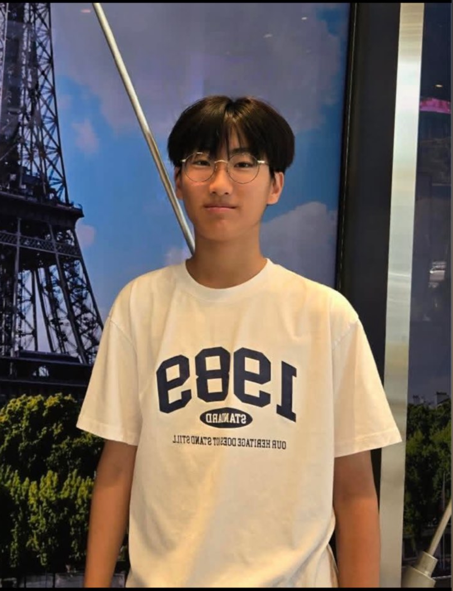

Dongha Kim
Reseda, California Chapter Founder
Hello, my name is Dongha, and I am a sophomore in LA County. There are many people in the world who need different kinds of help, and providing service is one of the most basic ways to achieve it.
Even small amounts of aid can have a greater impact on people’s lives. With that in mind, I am very excited to lead Hearts for Healing’s chapter at Cleveland High School.
I’m on our school’s tennis team and enjoy watching baseball games. I also love writing and volunteering at my local library. I am thrilled to represent Hearts for Healing here at Cleveland High!